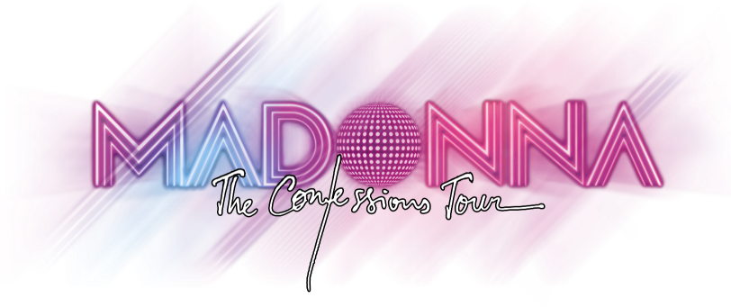
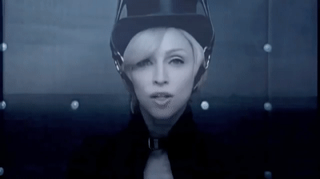
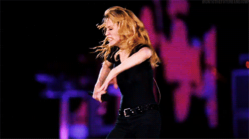

RUMO AO SHOW
Guie a rainha Madonna em segurança até a grande arena da Confessions Tour de 2006.
Use as setas do teclado para desviar dos 30 obstáculos eletrônicos ritmados na pista.
Use [↑ SETA PARA CIMA] para pular e [↓ SETA PARA BAIXO] para achatar o conjunto e passar por baixo.

MISSÃO CUMPRIDA
Seus reflexos foram impecáveis. A diva chegou perfeitamente ao palco principal e o espetáculo vai começar!
Muito obrigado por jogar e garantir o sucesso absoluto da turnê!